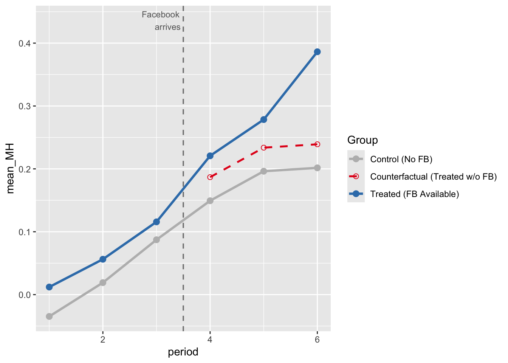

This is a simulation of what happens to outputs with typical OLS regression on cross-sectional data versus a quasi-experimental design (Difference-in-differences). This DiD design is heavily inspired by Braghieri et al. (2022), though some changes were made to simplify their design for this lab. The DiD framework follows Baker et al. (2025), which is a (long, 80+ page) practitioner’s guide for DiD. Monte carlo simulations follow Cunningham (2021)’s approach to teaching about causal inference.
library(ggplot2)
library(tidyverse)N <- 200 # Total colleges
delta <- 0.085 # True causal effect
gamma_u <- 0.30 # Unobserved covariate - OLS has no data for this
gamma_w <- 0.15 # Observed covariate - OLS will 'control' for this
time_trend <- 0.05 # Common time trendThe idea from Braghieri et al. (2022): Facebook was (randomly) rolled out to colleges at different times. We can use this exogenous shock to examine the effects of its availability on mental health outcomes. Therefore, our unit analysis here will be colleges (i.e., average college pre vs. post facebook)
set.seed(123)
# Create the 200 colleges and their traits
colleges <- tibble(
college = 1:N,
Treat = rep(c(1, 0), each = N / 2), # assign half treatment (1), half control (0)
U = rnorm(N), # random numbers in normal dist. for the covariates
W = rnorm(N)
)
df <- colleges %>%
crossing(period = 1:2) %>% # Duplicate each college to have both time 1 and time 2
mutate(
Post = as.integer(period == 2),
D = Treat * Post, # 1 only for treated colleges in the post-period
# Generate random error terms
e_sm = rnorm(n(), mean = 0, sd = 0.5),
e_mh = rnorm(n(), mean = 0, sd = 0.5),
# Generate Social Media (SM) use
SM = gamma_w * W + gamma_u * U + D + e_sm,
# Generate Mental Health (MH) outcomes (higher = worse)
MH = delta * SM + gamma_u * U + gamma_w * W + (time_trend * Post) + e_mh
)
head(df)## # A tibble: 6 × 11
## college Treat U W period Post D e_sm e_mh SM MH
## <int> <dbl> <dbl> <dbl> <int> <int> <dbl> <dbl> <dbl> <dbl> <dbl>
## 1 1 1 -0.560 2.20 1 0 0 -0.0368 0.178 0.125 0.350
## 2 1 1 -0.560 2.20 2 1 1 -0.584 -0.329 0.577 -0.0683
## 3 2 1 -0.230 1.31 1 0 0 -0.317 0.428 -0.190 0.539
## 4 2 1 -0.230 1.31 2 1 1 -0.0144 0.576 1.11 0.849
## 5 3 1 1.56 -0.265 1 0 0 0.335 0.138 0.763 0.631
## 6 3 1 1.56 -0.265 2 1 1 -0.825 0.0721 0.603 0.601First, we will calculate the Difference-in-Differences “by hand” using a simple Four-Means table (Baker et al., 2025). Then, we will compare that result against standard OLS regressions to see why cross-sectional data fails us here.
# 1. Four-Means Table (Baker et al., 2025)
# a simple table that shows means for each group and period
four_means <- df %>%
mutate(
Group = ifelse(Treat == 1, "Treated", "Control"),
Period = ifelse(Post == 1, "Post", "Pre")
) %>%
group_by(Group, Period) %>%
summarize(mean_MH = mean(MH), .groups = "drop") %>%
pivot_wider(names_from = Period, values_from = mean_MH) %>%
mutate(Change_Over_Time = Post - Pre)
print(four_means)## # A tibble: 2 × 4
## Group Post Pre Change_Over_Time
## <chr> <dbl> <dbl> <dbl>
## 1 Control 0.0224 -0.00564 0.0280
## 2 Treated 0.208 0.0654 0.142# 2. Calculate DiD Estimate From the Table
delta_T <- four_means$Change_Over_Time[four_means$Group == "Treated"]
delta_C <- four_means$Change_Over_Time[four_means$Group == "Control"]
did_manual <- delta_T - delta_C
round(did_manual, 4) # This is the estimated causal effect from the DiD, descriptively. ## [1] 0.1141We got an estimate of 0.114. That’s somewhat close to our defined true causal effect of 0.085! Let’s look at what result OLS would yield.
# For standard OLS, we only look at the post-treatment cross-sectional data
df_post <- df %>% filter(Post == 1)
# Regression 1: Naive OLS (Just SM and MH)
ols_naive <- lm(MH ~ SM, data = df_post)
# Regression 2: Adjusted OLS (Controlling for the observed variable 'W', like anxiety)
ols_adj <- lm(MH ~ SM + W, data = df_post)
# Regression 3: DiD Regression (Using the full panel data and interaction term)
did_reg <- lm(MH ~ Treat * Post, data = df)
coef(ols_naive)["SM"]## SM
## 0.3447804coef(ols_adj)["SM"]## SM
## 0.309343coef(did_reg)["Treat:Post"]## Treat:Post
## 0.1141245delta## [1] 0.085As you can see, the estimate from the DiD is much closer to the true causal effect.
Difference-in-Differences relies on the “Parallel Trends” assumption. This means that if the treatment (Facebook) had never happened, the treated colleges would have continued on the exact same trajectory as the control colleges.
To visualize this, we will simulate 6 time periods. Facebook will be rolled out to the treated colleges in Period 4 (so there are 3 periods pre-treatment and 3 periods post-treatment). We’ll use a larger N so that the lines don’t look jagged (but smooth).
set.seed(471)
N_pt <- 2000
U_pt <- rnorm(N_pt)
W_pt <- rnorm(N_pt)
Treat_pt <- rep(c(1, 0), each = N_pt/2)
periods <- 1:6
treat_time <- 4Now, we can create all possible combinations of college and period.
expand.grid() helps us do that.
pt_data <- expand.grid(college = 1:N_pt, period = periods) %>%
mutate(
U = U_pt[college],
W = W_pt[college],
Treat = Treat_pt[college],
Post = as.integer(period >= treat_time), # 1 if period 4, 5, or 6
D = Treat * Post # 1 only for treated group in post-periods
)Then, we’ll calculate the actual MH scores for each row (with error), and MH scores for each group (treated vs control) for each time period.
set.seed(471)
pt_data <- pt_data %>%
mutate(
e_sm = rnorm(n(), 0, 0.5),
e_mh = rnorm(n(), 0, 0.5),
SM = 0.15 * W + 0.30 * U + D + e_sm,
MH = 0.085 * SM + 0.30 * U + 0.15 * W + 0.05 * (period - 1) + e_mh
)
pt_means <- pt_data %>%
group_by(Treat, period) %>%
summarise(mean_MH = mean(MH), .groups = "drop") %>%
mutate(Group = ifelse(Treat == 1, "Treated (FB Available)", "Control (No FB)"))Here, we can build the counterfactual line (i.e., what the treated group would’ve looked like without treatment).
pre_diff <- pt_means %>%
filter(period < treat_time) %>%
group_by(Treat) %>%
summarise(pre_mean = mean(mean_MH), .groups = "drop")
# gap between treat and control in pre-treatment
shift <- pre_diff$pre_mean[pre_diff$Treat == 1] - pre_diff$pre_mean[pre_diff$Treat == 0]
# take the control group's post-treatment trajectory and literally push it up by 'shift'. Dashed parallel line.
counterfactual <- pt_means %>%
filter(Treat == 0, period >= treat_time) %>%
mutate(mean_MH = mean_MH + shift,
Group = "Counterfactual (Treated w/o FB)")Now generate the plot!
COL_BIAS <- "#E41A1C" # red — biased / confounded
COL_DID <- "#377EB8" # blue — DiD / identified
COL_DIMMED <- "#BBBBBB" # gray — dimmed paths
COL_TRUE <- "#333333" # dark gray — true effect line
THEME_BASE <- theme_minimal(base_size = 12) +
theme(panel.grid.minor = element_blank(),
plot.title = element_text(face = "bold", size = 13),
plot.subtitle = element_text(size = 10, color = "gray30"))
fig2 <- ggplot(pt_means, aes(x = period, y = mean_MH, color = Group, linetype = Group)) +
geom_line(linewidth = 1.1) +
geom_point(size = 2.5) +
# the counterfactual data we just calculated
geom_line(data = counterfactual, linewidth = 0.9) +
geom_point(data = counterfactual, size = 2, shape = 1) +
# a vertical dashed line to mark when treatment started
geom_vline(xintercept = treat_time - 0.5, linetype = "dashed", color = "gray50", linewidth = 0.6) +
annotate("text", x = treat_time - 0.5, y = max(pt_means$mean_MH) + 0.05,
label = "Facebook\narrives", size = 3, hjust = 1.1, color = "gray40") +
# map specific colors and line styles to our groups so they match the constants at the top
scale_color_manual(values = c("Control (No FB)" = COL_DIMMED,
"Treated (FB Available)" = COL_DID,
"Counterfactual (Treated w/o FB)" = COL_BIAS)) +
scale_linetype_manual(values = c("Control (No FB)" = "solid",
"Treated (FB Available)" = "solid",
"Counterfactual (Treated w/o FB)" = "dashed"))
fig2
As you can see, the counterfactual vs. treated line shows that Facebook availability does have an effect, since the counterfactual and treated lines diverge. The counterfactual line shows the trend IF the treatment group did not receive treatment (per the parallel trends assumption).
Next lab, we’ll continue with this example and do some assumption and robustness checks!